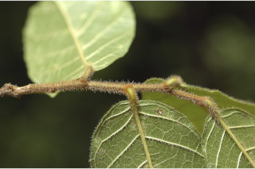
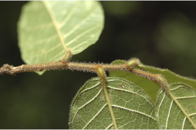

Large buttressed, deciduous trees up to 50 m tall.
50 ಮೀ. ಎತ್ತರದವರೆಗಿನ ಆನಿಕೆಗಳನ್ನುಳ್ಳ ಎಲೆಯುದುರು ಮಾದರಿಯ ದೊಡ್ಡ ಮರಗಳು.
Large buttressed, deciduous trees up to 50 m tall.
பெரிய தாங்கு வேர்களுடைய(பட்ரஸ்டு) இலையுதிர் மரம் 50 மீ. உயரம் வரை வளரக்கூடியது.
Bark greyish-white, smooth, pustular lenticels in vertical rows; blaze brownish.
ತೊಗಟೆ ಬೂದು-ಬಿಳಿ ಬಣ್ಣದಲ್ಲಿದ್ದು ನಯವಾಗಿರುತ್ತದೆ; ಸೂಕ್ಷ್ಮ ವಾಯುವಿನಿಮಯ ಬೆಂಡು ರಂಧ್ರಗಳು ಗಂತಿಗಳ ರೂಪದದಲ್ಲಿದ್ದು ಲಂಬ ಸಾಲಿನಲ್ಲಿ ಜೋಡಿತವಾಗಿರುತ್ತವೆ; ಕಚ್ಚು ಮಾಡಿದ ಜಾಗ ಕಂದು ಬಣ್ಣದಲ್ಲಿರುತ್ತದೆ.
Bark greyish-white, smooth, pustular lenticels in vertical rows; blaze brownish.
மரத்தின் பட்டை சாம்பல்-வெள்ளை நிறமானது, வழவழப்பானது, நீர் கோர்த்தது போன்ற (புஸ்டுலார்) எழும்பிய அமைப்புடைய லெண்டிசெல் நீள்வாக்கில் அமைந்தது; உள்பட்டை ப்ரவுன் நிறமானது.
Young branchlets terete, tomentose, later glabrous.
ಎಳೆ ಕಿರುಕೊಂಬೆಗಳು ದುಂಡಾಗಿದ್ದು ದಟ್ಟ ಮೃದು ತುಪ್ಪಳದಿಂದ ಕೂಡಿರುತ್ತವೆ ನಂತರ ರೋಮರಹಿತವಾಗಿರುತ್ತವೆ.
Young branchlets terete, tomentose, later glabrous.
சிறியநுனிக்கிளைகள் குறுக்குவெட்டுத் தோற்றத்தில் வளையமானது, உரோமங்களுடையது, முதிரும் போது உரோமங்களற்றது.
Latex watery or milky.
ಜಿನುಗು ದ್ರವ ಜಲರೂಪಿ ಅಥವಾ ಹಾಲಿನ ಬಣ್ಣದಲ್ಲಿರುತ್ತವೆ.
Latex watery or milky.
தண்ணீர் போன்ற சாறு அல்லது வெள்ளை நிற பால் போன்றது.
Leaves simple, alternate, distichous, stipules small, connate, caducous, leaving scar; petiole 0.3-0.8 cm long, pubescent; lamina to 6.5-15 x 2.5-5 cm, elliptic-oblong, apex obtusely acuminate, base rounded or cordate, margin entire or distantly crenulate, young leaves hairy on both sides, later glabrous and scabrous beneath; midrib raised above; secondary_nerves 8-10 pairs; tertiary_nerves reticulo-percurrent.
ಎಲೆಗಳು ಸರಳವಾಗಿದ್ದುಪರ್ಯಾಯ ಜೋಡನಾ ವ್ಯವಸ್ಥೆಯಲ್ಲಿದ್ದು ಕಾಂಡದ ಎರಡೂ ಕಡೆ ಎದುರು ಬದರಿನ ಲಂಬ ಸಾಲಿನಲ್ಲಿರುತ್ತವೆ;ಕಾವಿನೆಲೆಗಳು ಸಣ್ಣಗಾತ್ರದವುಗಳಾಗಿದ್ದು, ಆಜನ್ಮ ಸಂಯುಕ್ತ ವಾಗಿರುತ್ತವೆ ಮತ್ತು ಉದುರಿ ಹೋದಾಗ ಗುರುತನ್ನು ಉಳಿಸುತ್ತವೆ; ತೊಟ್ಟುಗಳು ಅಂದಾಜು 0.3 – 0.8 ಸೆಂ.ಮೀ. ಉದ್ದ ಹೊಂದಿದ್ದು ಮೃದುತುಪ್ಪಳವನ್ನು ಹೋದಿರುತ್ತವೆ;ಪತ್ರಗಳು 6.5 – 15 X 2.5 – 5 ಸೆಂ.ಮೀ. ಗಾತ್ರವಿದ್ದು ಅಂಡವೃತ್ತ- ಚತುರಸ್ರದ ಆಕಾರದಲ್ಲಿದ್ದು,ಚೂಪಲ್ಲದ ಕ್ರಮೇಣ ಚೂಪಾಗುವ ತುದಿ, ದುಂಡಾದ ಅಥವಾ ಹೃದಯಾಕಾರದ ಬುಡ, ನಯವಾದ ಅಥವಾ ಅಂತರಹೊಂದಿದ ಸೂಕ್ಷ್ಮದಂತಗಳಿಂದ ಕೂಡಿದ ಅಂಚು ಹೊಂದಿರುತ್ತವೆ,ಎಳೆಯದಾದ ಎಲೆಗಳು ಎರಡೂ ಬದಿಯಲ್ಲಿ ರೋಮಸಹಿತವಾಗಿದ್ದು ಬಲಿತಾಗ ರೋಮರಹಿತವಾಗಿದ್ದು ಒರಟು ಮೇಲ್ಮೈ ಹೊಂದಿರುತ್ತವೆ;ಮಧ್ಯ ನಾಳ ಮೇಲ್ಭಾಗದಲ್ಲಿ ಮೇಲೆದ್ದಿರುತ್ತದೆ; ಎರಡನೇ ದರ್ಜೆಯ ನಾಳಗಳು 8 ರಿಂದ 10 ಜೋಡಿಗಳಿರುತ್ತವೆ;ಮೂರನೇ ದರ್ಜೆಯ ನಾಳಗಳು ಜಾಲಬಂಧ ನಾಳವಿನ್ಯಾಸದಲ್ಲಿದ್ದು ಎಲೆದಿಂಡಿಗೆ ಅಡ್ಡ ಕೂಡುವಂತವು.
Leaves simple, alternate, distichous, stipules small, connate, caducous, leaving scar; petiole 0.3-0.8 cm long, pubescent; lamina to 6.5-15 x 2.5-5 cm, elliptic-oblong, apex obtusely acuminate, base rounded or cordate, margin entire or distantly crenulate, young leaves hairy on both sides, later glabrous and scabrous beneath; midrib raised above; secondary_nerves 8-10 pairs; tertiary_nerves reticulo-percurrent.
இலைகள் தனித்தவை, மாற்றுஅடுக்கமானவை, இருநெடுக்கு வரிசையிலையடுக்கம் (டைஸ்டிக்கஸ்), இலையடிச்செதில் சிறியவை, இணைந்தவை, எளிதில் உதிரக்கூடியவை மற்றும் தழும்புகளை ஏற்படுத்தவல்லது; இலைக்காம்பு 0.3-0.8 செ.மீ. நீளமானது, உரோமங்களுடையது; இலை அலகு 6.5-15 X 2.5-5 செ.மீ., நீள்வட்ட-நீள்சதுர வடிவானது, அலகின் நுனி அதிக்கூரியதுடன் அதன் முனை மழுங்கியது, அலகின் தளம் வட்டமானது அல்லது இதய வடிவானது, அலகின் விளிம்பு முழுமையானது அல்லது ஆங்காங்கே சிறிய பிறை போன்ற பற்களுடையது, அலகின் மேற்பரப்பு மற்றும் கீழ்பரப்பு உரோமங்களுடையது, முதிரும் போது உரோமங்களற்றது மற்றும் அலகின் கீழ்பரப்பு சொரசொரப்பானது; மையநரம்பு மேற்புறத்தில் அலகின் பரப்பைவிட உயர்ந்து இருக்கும்; இரண்டாம் நிலை நரம்புகள் 8-10 ஜோடிகள்; மூன்றாம் நிலை நரம்புகள் வலைப்பின்னல்-பெர்க்கரண்ட் அமைப்பு கொண்டது.
Flowers unisexual; male flowers greenish yellow, in axillary peduncled spikes; female flowers solitary axillary.
ಹೂಗಳು ಏಕಲಿಂಗಿಗಳು; ಗಂಡು ಹೂಗಳು ಹಸಿರು ಮಿಶ್ರಿತ ಹಳದಿ ಬಣ್ಣ ಹೊಂದಿದ್ದು ಅಕ್ಷಾಕಂಕುಳಿನಲ್ಲಿನ ಪುಷ್ಪ ಮಂಜರಿ ವೃಂತದಲ್ಲಿರುತ್ತವೆ;ಹೆಣ್ಣು ಹೂಗಳು ಒಂಟಿಯಾಗಿದ್ದು ಅಕ್ಷಾಕಂಕುಳಿನಲ್ಲಿರುತ್ತವೆ.
Flowers unisexual; male flowers greenish yellow, in axillary peduncled spikes; female flowers solitary axillary.
மலர்கள் ஓர் பாலானவை; ஆண் மலர்கள் பச்சை-மஞ்சள் நிறமானவை, இலைக்கோணங்களில் காணப்படுபவை மஞ்சரி காம்புடைய ஸ்பைக் வகை; பெண் மலர்கள் தனித்தவை, இலைக்கோணங்களில் காணப்படுபவை .
Drupe, fleshy, pyriform or obovoid, scarlet; seed 1.
ಡ್ರೂಪ್ ಫಲಗಳು ಮಾಂಸಲವಾಗಿದ್ದು,ಪೇರು ಹಣ್ಣಿನ ರೂಪ ಅಥವಾ ಬುಗುರಿಯಾಕಾರದಲ್ಲಿರುತ್ತವೆ ಮತ್ತು ಕಡುಗೆಂಪು ಬಣ್ಣವನ್ನು ಹೊಂದಿರುತ್ತವೆ;ಬೀಜಳು ಒಂದು.
Drupe, fleshy, pyriform or obovoid, scarlet; seed 1.
உள்ளோட்டுத்தசைகனி (ட்ரூப்), சதைப்பற்றானது, பைரிபார்ம் அல்லது தலைகீழ் முட்டை வடிவம், கரும்சிவப்பு நிறமானது; ஒரு விதையுள்ள கனி.


 
